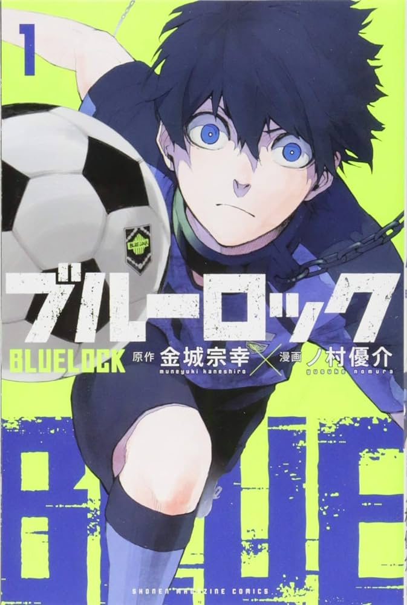
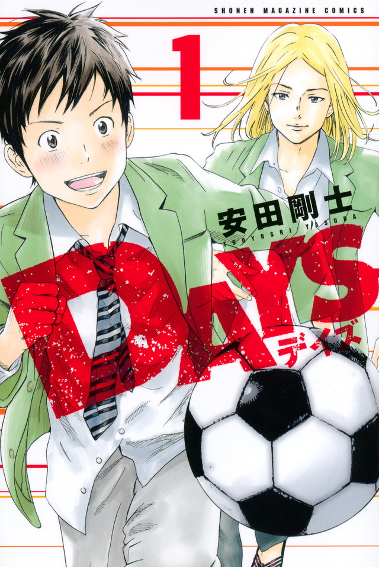
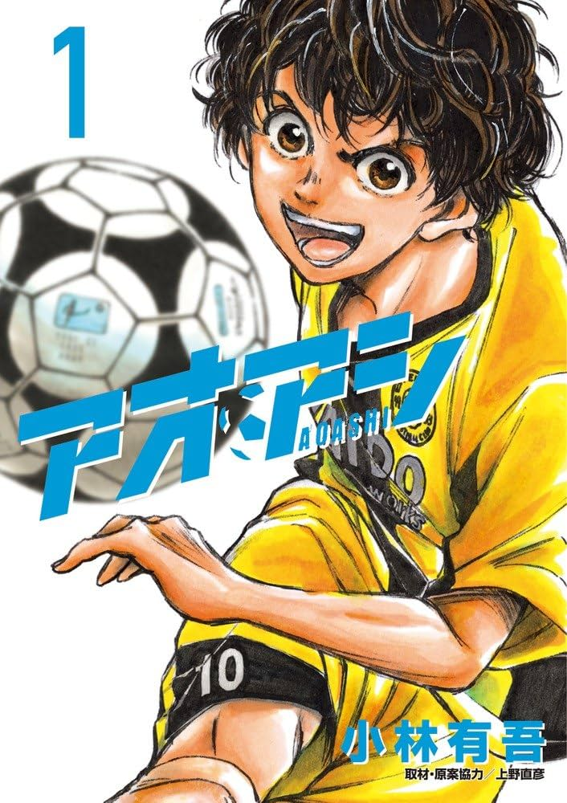
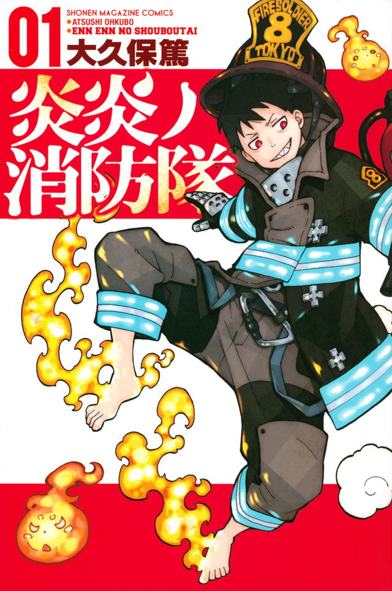
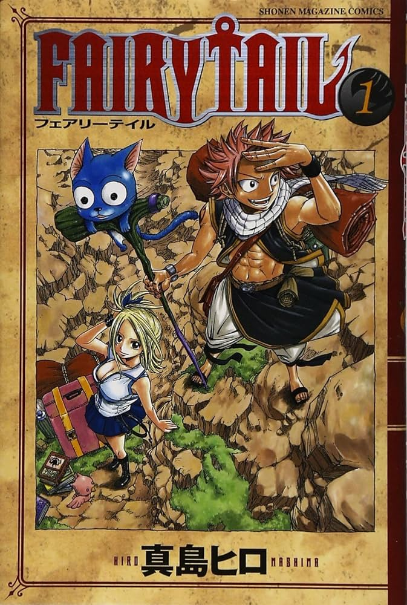
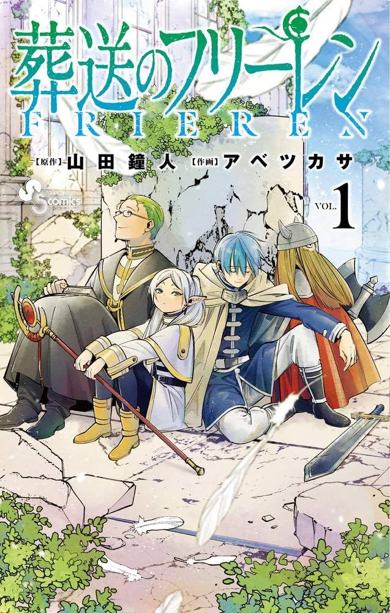

ブルーロック

公式HP
原作：金城宗幸、作画：ノ村優介によるサッカー漫画。『週刊少年マガジン』（講談社）にて2018年35号より連載中
DAYS

公式HP
安田剛士によるサッカー漫画。『週刊少年マガジン』（講談社）にて2013年21・22合併号から2021年8号まで連載された。
アオアシ

公式HP
小林有吾によるサッカー漫画。監修はスポーツライターの飯塚健司。『ビッグコミックスピリッツ』（小学館）にて、2015年6号から連載中。
炎炎ノ消防隊

公式HP
大久保篤によるダーク・ファンタジー漫画。『週刊少年マガジン』（講談社）にて2015年43号から2022年13号まで連載された。
FAIRY TALE

公式HP
真島ヒロによるファンタジー漫画。『週刊少年マガジン』（講談社）において2006年35号から2017年34号まで連載された。
葬送のフリーレン

公式HP
山田鐘人（原作）、アベツカサ（作画）によるファンタジー漫画。『週刊少年サンデー』（小学館）にて、2020年22・23合併号より連載中。